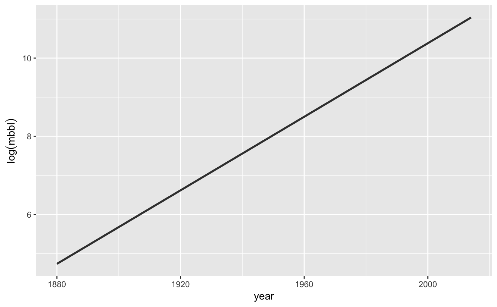

Annual production of crude oil, in millions of barrels (mbbl).
data(Oil_history)
A data frame with 47 cases, each of which is a US state, with observations on the following variables.
year the year for which production is reported
mbbl oil production in millions of barrels
Assembled from older information from RH Romer (1976) "Energy: An Introduction to Physics" and more recent
data from data.oecd.org.
